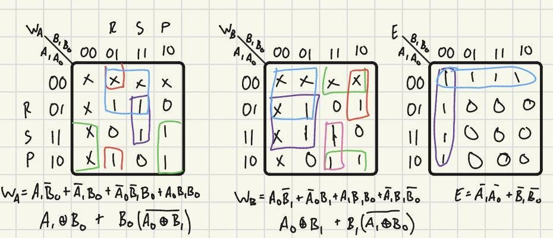
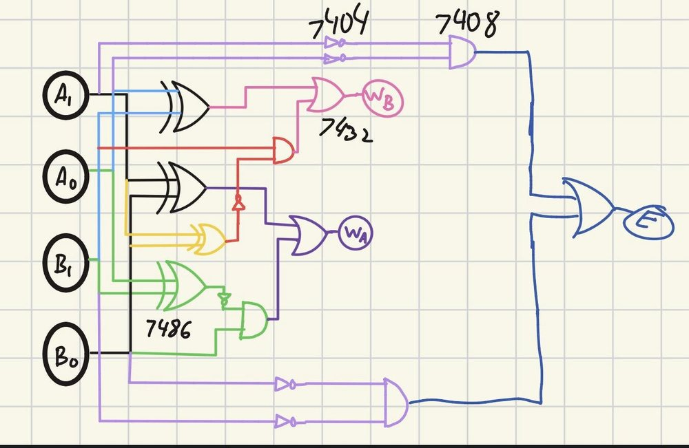
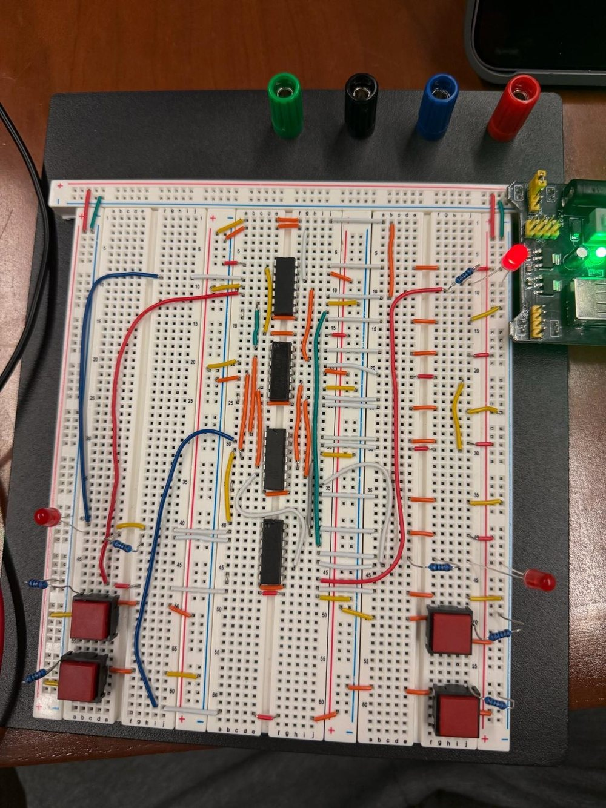

Rock-paper-scissors judge
Digital Circuits and Systems, Lab 5, Fall 2026
A circuit that judges a round of rock-paper-scissors from two 2-bit choices. It lights the winner's LED, lights both for a tie, and lights an error LED for an invalid input.
- Inputs
- Four push buttons: A1 A0 and B1 B0
- Outputs
- WA and WB (winner LEDs), E (invalid input)
- Chips
- 4 (7404, 7408, 7432, and 7486)
- Gates
- 17 (6 NOT, 4 AND, 3 OR, 4 XOR)
Design decisions
Each player's choice is a 2-bit code: rock is 01, paper is 10, and scissors is 11. That leaves 00 as the invalid selection, so a player who presses nothing is flagged rather than counted as a choice.
For a tie I light both winner LEDs, since neither player lost and neither won. When either input is invalid, E turns on, and WA and WB are don't-cares. Treating those rows as don't-cares lets the K-map groups grow, which shrinks the logic.
Logic
I reduced each output with a K-map.
WA = A1 ⊕ B0 + B0·(A0 ⊕ B1)' WB = A0 ⊕ B1 + B1·(A1 ⊕ B0)' E = A1'·A0' + B1'·B0'

Circuit
The design uses 17 gates on four chips: a 7404 for the inverters, a 7408 for the ANDs, a 7432 for the ORs, and a 7486 for the XORs.

